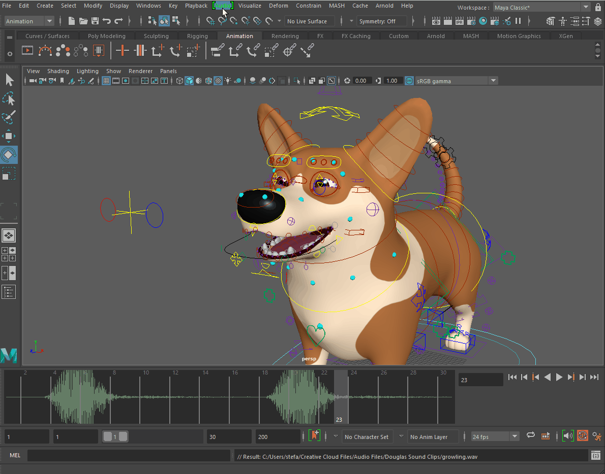
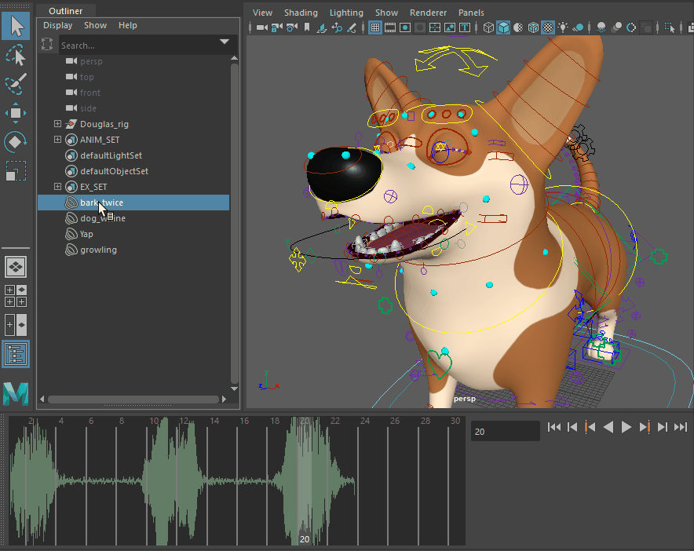
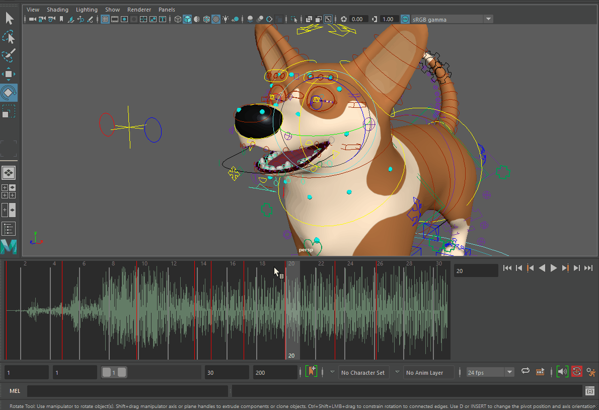
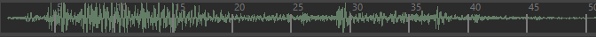

“音频”(Audio)菜单
在
“动画”(Animation)
菜单集
(
F4
) 中
在
播放选项(Playback Options)
的
“音量”(Volume)
图标 上单击鼠标右键
在
时间滑块(Time Slider)
上单击鼠标右键，然后选择
“音频”(Audio)
卷展栏。

导入音频(Import Audio)
打开
“导入选项”(Import Options)窗口
，其中
“音频”(Audio)
设置为要导入的默认文件类型。有关详细信息，请参见
播放音频文件
。在“时间滑块”(Time Slider)上，导入的音频文件设置为活动声音。
将音频片段导入到时间编辑器(Import Audio Clip to Time Editor)
使用此选项可将音频文件作为时间编辑器片段引入到场景中。请参见
将音频添加到时间编辑器
。
声音(Sounds)
此部分列出了要在
时间滑块(Time Slider)
上显示的已导入声音，且仅显示最近添加到场景中的 30 个声音。（如果场景中的声音超过 30 个，它们在
大纲视图(Outliner)
中可见。）

禁用
在场景中完全禁用音频。
使用 Trax 声音(Use Trax Sounds)
播放场景中的所有声音。当“使用 Trax 声音”(Use Trax Sounds)处于活动状态且场景中有多个音频文件时，波形将变为一条实线。如果要偏移文件以便它们在不同时间播放，请参见
播放音频文件
主题中的“创建音频偏移”。
禁用
双击以将音量级别设置为 0，并将“音量”(Volume)图标更改为“禁用”(Mute)图标 ()。再次双击以将音量级别返回到上次使用的音量设置，例如，如果“音量”(Volume)设置为 25，然后禁用音量，则取消禁用音量会将音量级别返回到 25。
调整音量(Adjust Volume)
打开“音量”(Volume)滑块。此滑块将一直保持活动状态，直到音频发生更改或在滑块区域外单击。
删除声音(Delete Sounds)

用于从场景中移除声音。请参见
从场景中删除音频
。
注：
“音频”(Audio)
菜单仅显示 30 个最近添加到场景中的声音。如果场景中的声音超过 30 个，则可以从
大纲视图(Outliner)
中删除它们。
波形显示
用于设置在
时间滑块(Time Slider)
上绘制波形的方式。可选择“顶”(Top)、“底”(Bottom)或“集中”(Centered)。

“时间滑块”(Time Slider)上波形的三个位置：“集中”(Centered)、“顶”(Top)和“底”(Bottom)
此设置将成为默认设置并一直保留，直到其发生更改。
父主题：
时间滑块(Time Slider)